SQL Server 2022 requires .NET Framework 4.7.2 or greater
- Choose edition.
- Configure Azure Extension (if applicable).
- Choose features.
- Specify instance name (if applicable).
- Configure service accounts and collation settings.
- Configure authentication mode, data directories, tempdb, maxdop, memory, and FILESTREAM.
- Review setup and finish the installation.
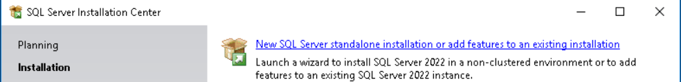
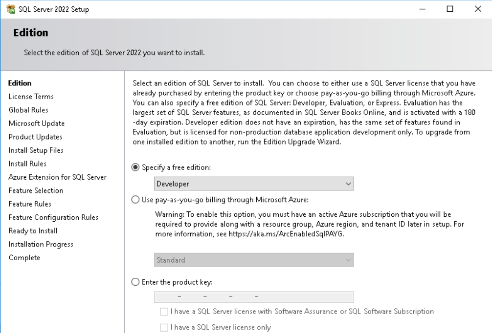
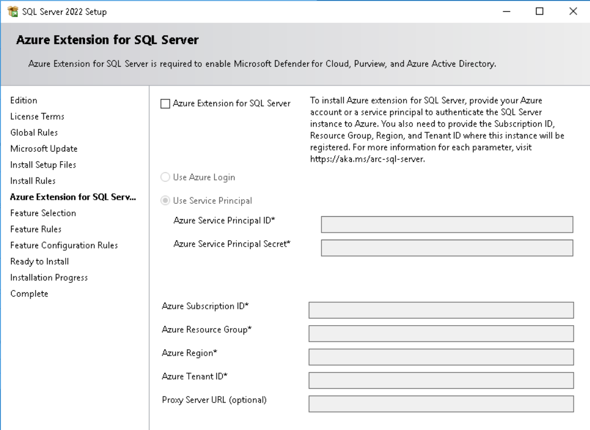
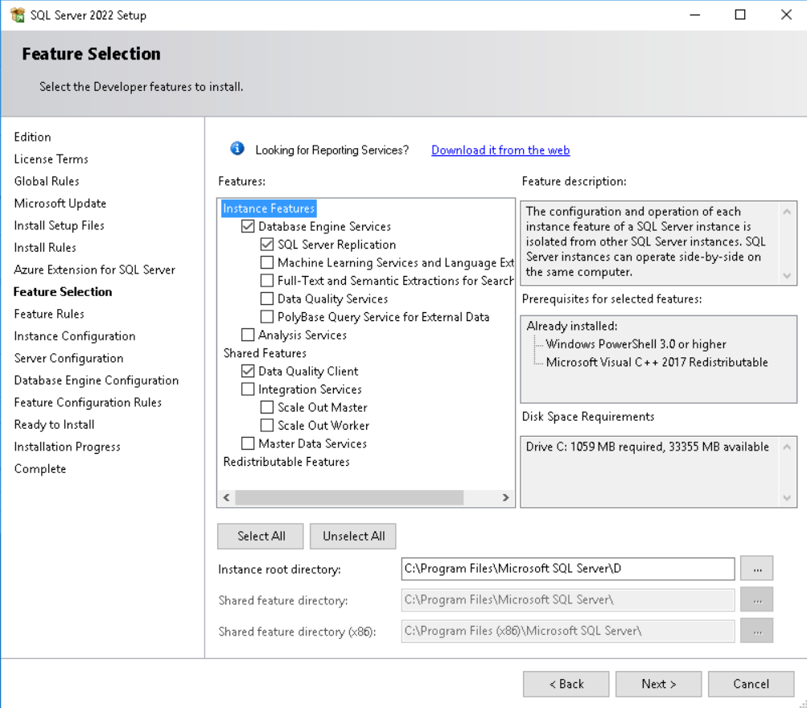
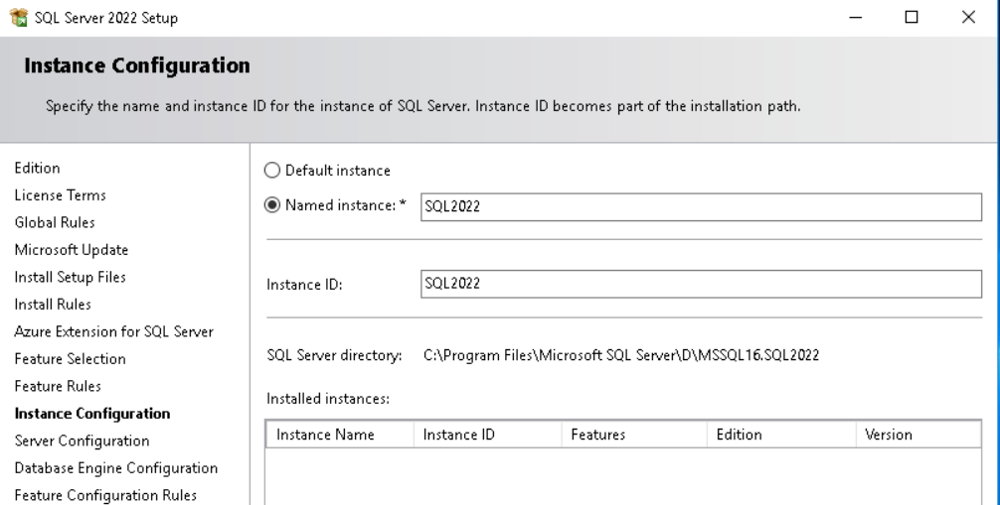
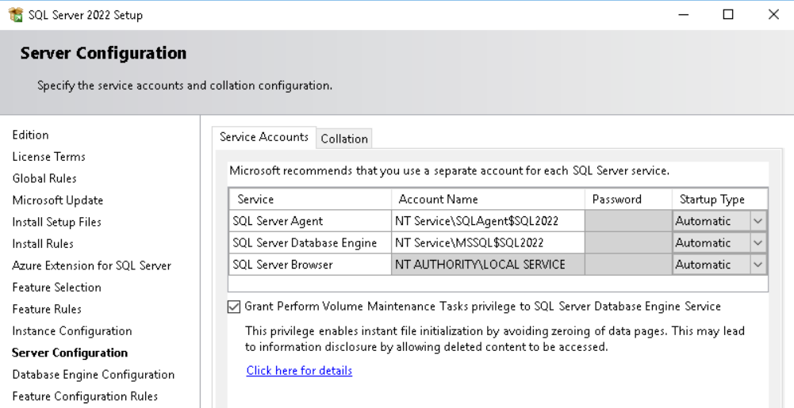
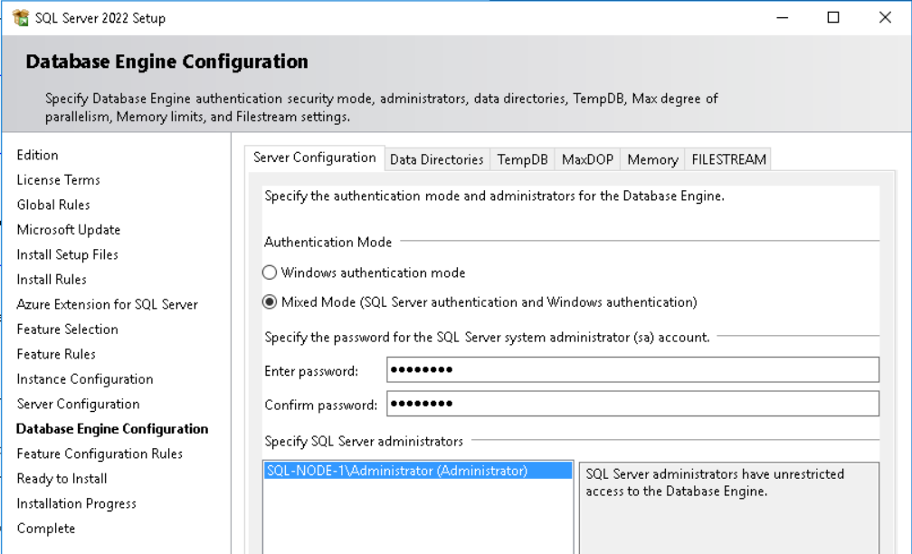
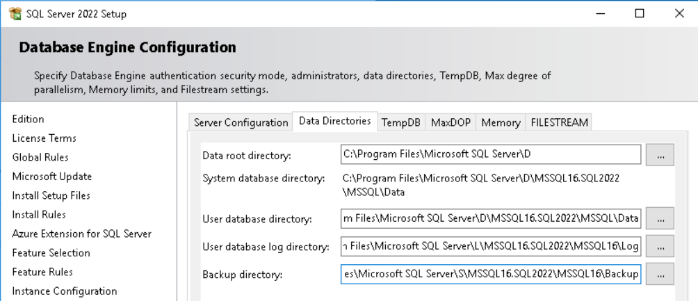
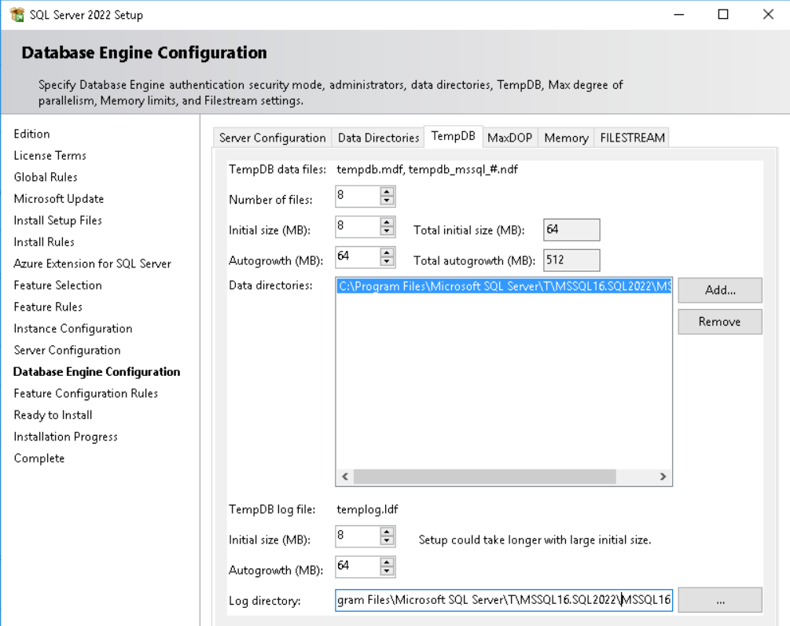
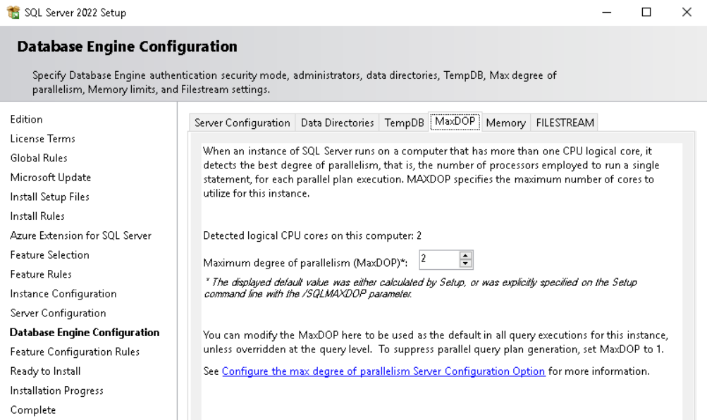
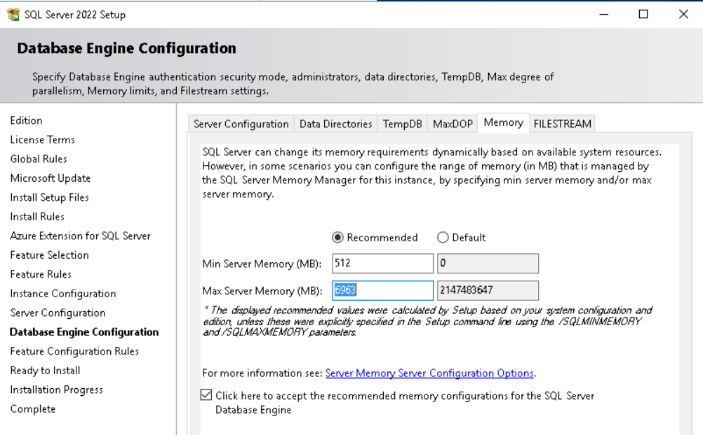
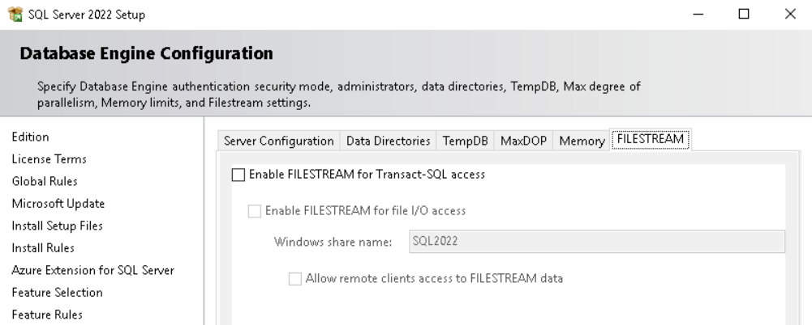
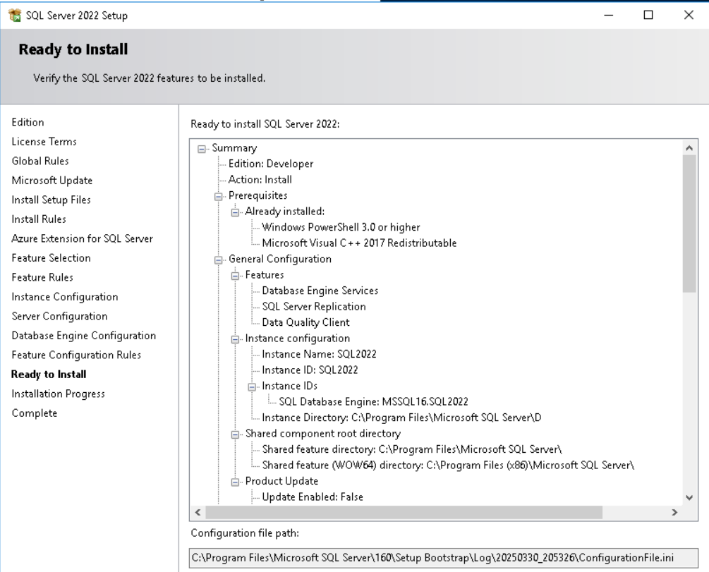
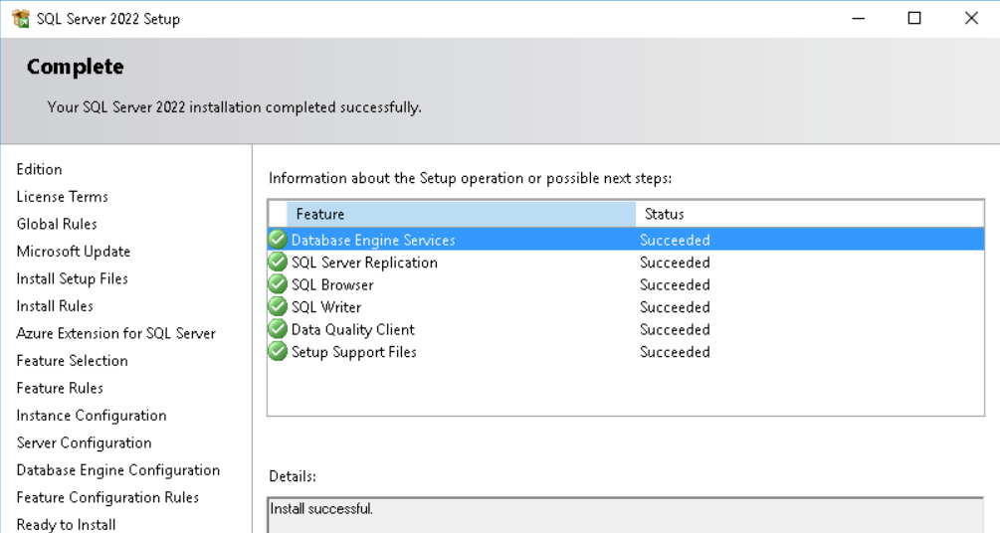
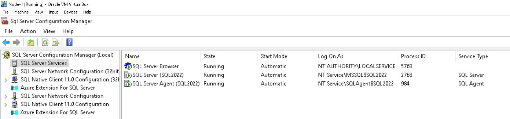